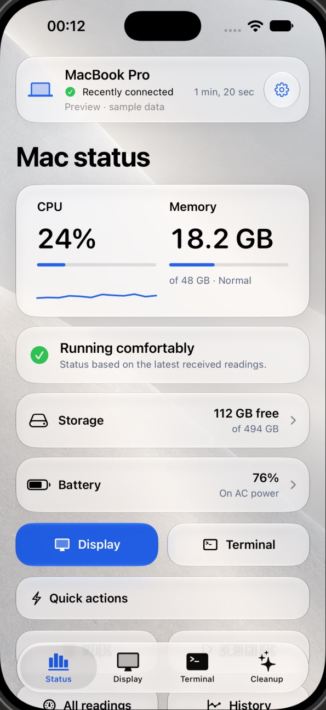
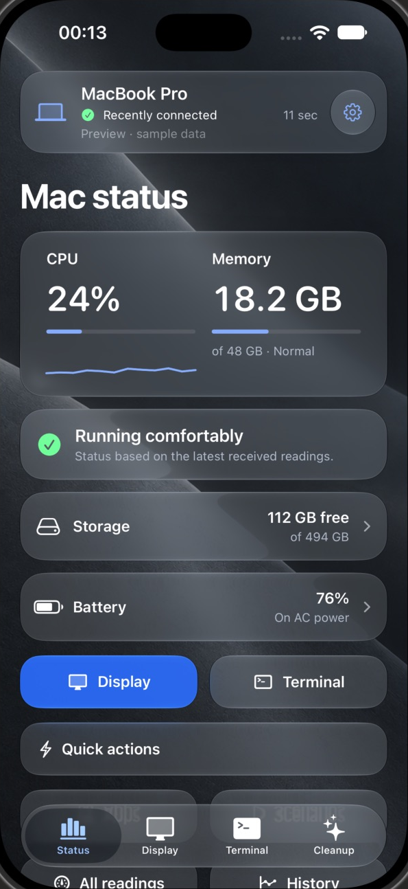

Your Mac.
On your iPhone.
Status and control, through your private iCloud.
Join the waitlistMac awake and online.


Your devices. Your private iCloud.
Readings
Battery, CPU, memory and storage in your private iCloud.
Screen
View and control your Mac over an encrypted Live connection.
Control
Send commands and run common tasks.
Waitlist email is stored separately in Cloudflare.
Questions
What stays in my iCloud?
Readings, commands and requested screen images stay in your private iCloud. The developer can’t access them. Live screen and input use a separate encrypted connection. Nearby control stays on your local network.
What do I need?
iOS 17 or later and macOS 14 or later, with the same iCloud account. Install the iPhone app through TestFlight and the signed Mac agent. Enable screen viewing and control separately on your Mac.
Does my Mac need to be awake?
Yes. It must be awake, online and running the agent. MacReport cannot remotely unlock macOS or answer password prompts.
Does Live work on every network?
Some networks block direct connections. You can configure your own TURN relay or request screen images through iCloud. Live has no audio. Viewing stops when your Mac locks or sleeps.
What happens during cleanup?
You choose the files and confirm. Moving them to recovery does not free space; permanent deletion needs a separate confirmation. Personal files are never selected automatically.
Where does my waitlist email go?
Your email is stored in Cloudflare D1 through OpenAI Sites, separately from iCloud. Oleg Yakushin can view and export the list to send invitations manually. The form does not send an automatic email.
To remove your address, email hello@olegotka.es.
Try MacReport.
Leave your email for a testing invitation.
Invitations are sent manually. Joining doesn’t grant access yet.
Already invited?
Install after receiving your iPhone invitation.
Download the Mac agentVersion 0.8.1 (33) · Developer ID signed and notarized.